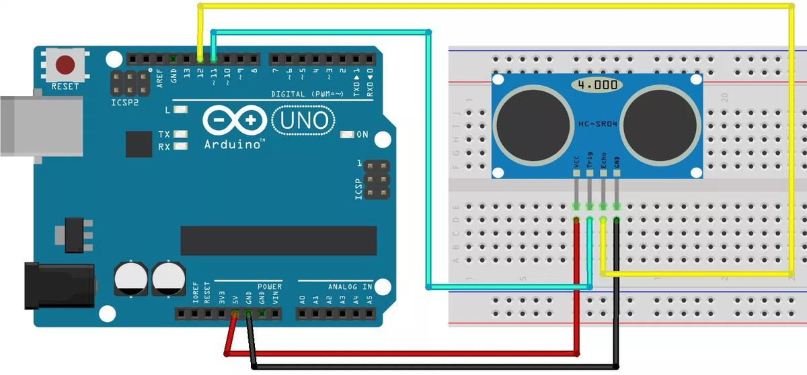
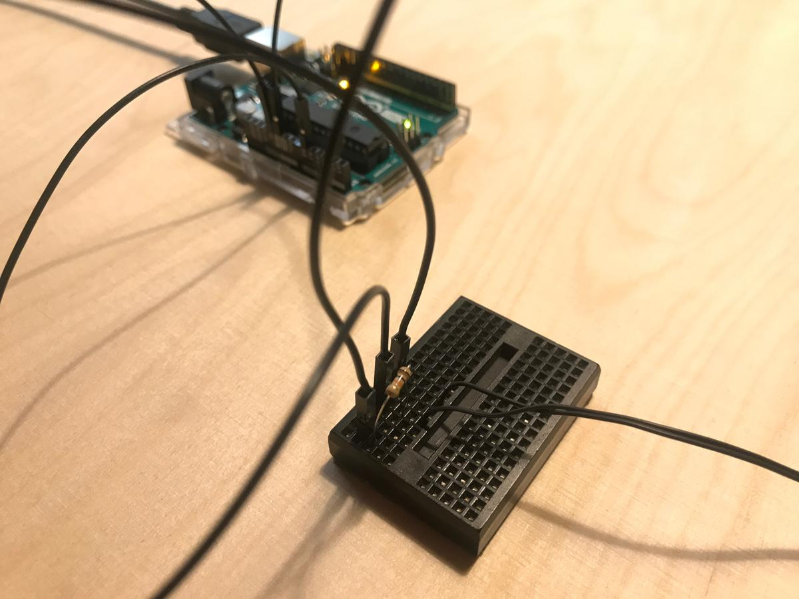
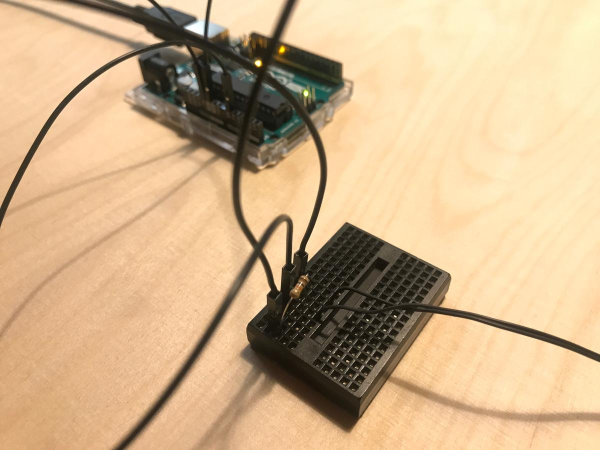
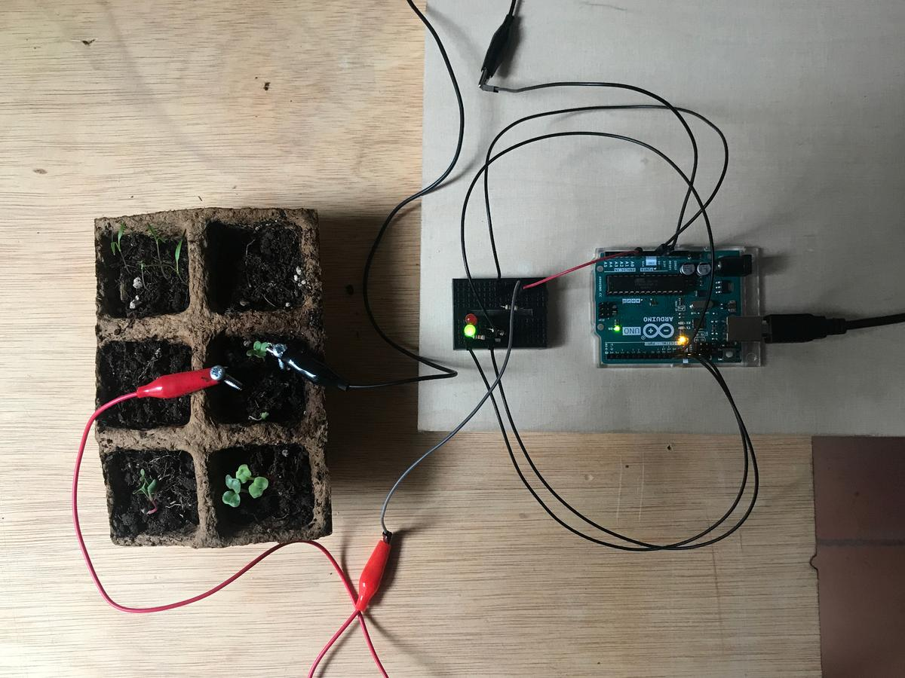
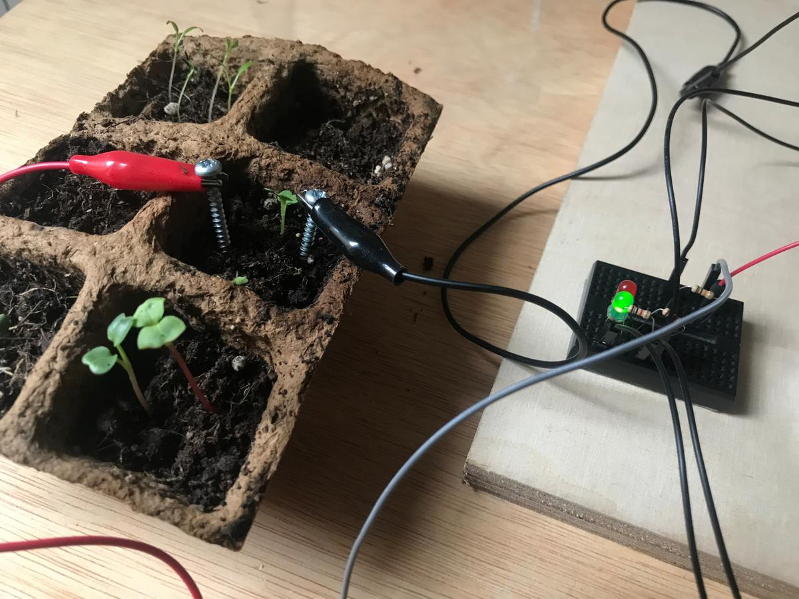

Input devices
Let's play with sensors.
Ultrasonic sensor HC-SR04
The ultrasonic sensor HC-SR04 provides 2Cm to 400cm of non-contact measurement functionality with a ranging accuracy that can reach up to 3mm. Here is its datasheet. This sensor has 4 pins that we have to connect to our dev board.
- 5V supply
- Trigger Pulse Input
- Echo Pulse Output
- GND

I'm using an Arduino UNO to use this sensor because it needs a voltage of 5V. Unfortunately, the Barduino and its ESP32 only has a voltage of 3.3V.
Connection
The connection is quite simple, the VCC goes to the 5V, the GND to the GND, the Echo to a digital pin, let's say the 12 and the Trig to another digital pin, the 11.

Code
Here is the basic code to read data from the ultrasonic sensor, to convert them into readable values (cm) and print it on the serial monitor.
To quickly create a PlatformIO project for the Arduino UNO, open a terminal and navigate to a freshly created folder and type $ pio project init --board uno. As simple as that.
Create in new main.cpp file into the src folder.
int trigPin = 11;
int echoPin = 12;
long duration, cm;
void setup() {
Serial.begin(9600);
pinMode(trigPin, OUTPUT);
pinMode(echoPin, INPUT);
}
void loop() {
digitalWrite(trigPin, LOW);
delayMicroseconds(5);
digitalWrite(trigPin, HIGH);
delayMicroseconds(10);
digitalWrite(trigPin, LOW);
pinMode(echoPin, INPUT);
duration = pulseIn(echoPin, HIGH);
cm = (duration/2) / 29.1;
Serial.print(cm);
Serial.print("cm");
delay(250);
}
Compile it and upload it to the UNO pio run -t upload and open the serial monitor pio device monitor to see the distance value calculated by the ultrasonic sensor. I'm impressed how fast and accurate it is.
Explanations
cm = (duration/2) / 29.1 is how we convert the duration to a distance, using a formula: distance = (traveltime/2) * speed of sound. The speed of sound is 343m/s wich is equal to 1/29.1 cm/uS. We need to divide the traveltime by 2 because the wave we sent hit the object and then returned back to the sensor.
Thermistor
Or how to measure temperature using a resistor.
To measure the temperature, we need to measure the resistance. However, a microcontroller does not have a resistance-meter built in. Instead, it only has a voltage reader known as a analog-digital-converter. So what we have to do is convert the resistance into a voltage, and we will do that by adding another resistor and connecting them in series. Now you just measure the voltage in the middle, as the resistance changes, the voltage changes too, according to the simple voltage-divider equation. We just need to keep one resistor fixed
Analog Voltage Reading Method, Adafruit
 

Connection
The thermistor is linked to the 5V pin and to an analog pin 0 through a 10k resistor, and to GND.

Code
Here is the piece of code that print the value of the analog pin 0 and convert its values into a Celcius temperature.
int analogPin = 0;
int beta = 3950;
int resistance = 10;
void setup() {
Serial.begin(9600);
}
void loop() {
long a = analogRead(analogPin);
float temp = beta / (log((1025.0*10/a-10)/10) + beta/298.0)-273.0;
Serial.println(temp);
delay(1000);
}
TODO: Update values according to this tutorial
Moisture level sensor
Water is a conductive element, and the more water there is in the soil the more electricity can flow through it. So, in order to measure the soil moisture level, we can integrate it into an electrical circuit and measure the voltage. The more voltage in the circuit, the more water there is in the soil.

To represent it, I built a small system that lights a green LED when the soil is wet and a red LED when it's dry.
Connection
- 5V from the Arduino UNO to the soil
- A0 (anaolog) from the Arduino UNO to the soil
- A0 (analog) from the Arduino UNO to the GND (analog) through a 10kΩ resistor
- 11 (digital) to the red LED through a 220Ω resistor
- 12 (digital) to the green LED through a 220Ω resistor
- LED's to the GND (digital)

Code
The code is basic. If the analog pin gets a high voltage, it means that the soil is moist and the plant is happy so we turn on the green LED, and vice versa.
I plan to write a more complex code in the coming weeks, a code that takes into account the amount of water needed for each specific plant, and to alert when it's too dry or too weet.
int ledGreen = 12;
int ledRed = 11;
int contactVal = 0;
void setup() {
Serial.begin(9600);
pinMode(ledGreen, OUTPUT);
pinMode(ledRed, OUTPUT);
}
void loop() {
contactVal = analogRead(0);
Serial.println(contactVal);
if (contactVal >= 350) {
digitalWrite(ledRed, LOW);
digitalWrite(ledGreen, HIGH);
} else {
digitalWrite(ledRed, HIGH);
digitalWrite(ledGreen, LOW);
}
delay(250);
}
Here is my tiny system in action, olé.